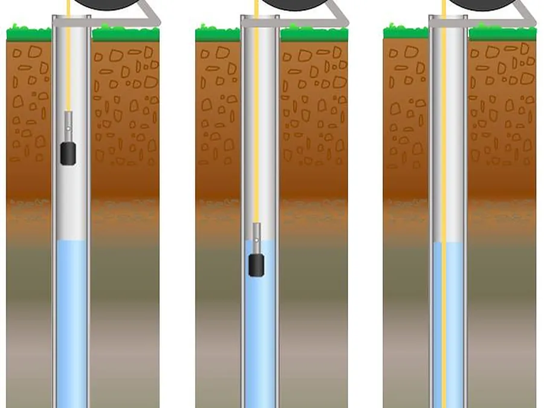

Niveau · Niveau et surverse
Sondes lumineuses BFSondes piézométriques à ruban
La mesure manuelle du niveau d’eau dans un piézomètre, un puits, un forage ou un réservoir. Quand les électrodes de la sonde touchent l’eau, un signal sonore et lumineux se déclenche : le niveau se lit sur le câble gradué.
- Câbles
- 30 à 500 m
- Graduation
- Au mm (BFM) ou au cm (BFK)
- Sonde
- Ø 10, 15 ou 25 mm
- Alimentation
- Pile 9 V
Idéal pour
- Piézomètres
- Puits et forages
- Suivi des nappes
- Réservoirs
- Contrôles de terrain
LeasingDisponible à l’achat ou en leasing, par mensualités. Comment ça marche
Points forts
Le relevé manuel de référence des eaux souterraines.
- Signal sonore et lumineuxDès que les électrodes atteignent l’eau.
- Graduation au mmRuban plat BFM imprimé au millimètre ; câble rond BFK au centimètre.
- Détection du fondModèles FF : voyant vert quand la sonde touche le fond du puits.
- Mesure de températureModèle WMS-02 : sonde PT100, − 10 à + 50 °C, ± 0,1 °C.
- Forages étroitsSonde de 10 mm de diamètre sur la série BFK.
- Dévidoir transportableCâble enroulé, de 30 à 500 m.
Principe de mesure
L’extrémité de la sonde porte deux électrodes. Quand elles atteignent l’eau, conductrice, le circuit se ferme et déclenche un signal sonore et lumineux.
L’opérateur lit le niveau sur les graduations du câble, au niveau du repère de la tête de puits. Un réglage de sensibilité adapte la détection à l’eau mesurée.
- BFM : ruban plat 2 × 10 mm, armature inox, sonde de 15 mm
- BFK : câble rond Ø 5 mm avec fil kevlar, sonde de 10 mm
- Modèles FF : sonde à piston de 25 mm, détection du fond
Applications
Pour la mesure manuelle des niveaux d’eau souterraine.
- PiézomètresSuivi régulier du niveau des nappes.
- Puits et foragesNiveau statique et profondeur du forage.
- RéservoirsMesure de niveau manuelle.
- Études hydrogéologiquesRelevés de terrain avec température en option.
Caractéristiques
Deux séries de câble, longueurs et dévidoirs selon le modèle.
| Câble | Ruban plat 2 × 10 mm, 2 conducteurs cuivre, armature inox, gaine nylon |
|---|---|
| Graduation | Tous les mm |
| Sonde | Inox Ø 15 mm (Ø 25 mm en version FF) |
| Longueurs | 50, 100, 150, 200, 300 m |
| Poids | 2,1 à 14 kg selon la longueur |
| Câble | Rond Ø 5 mm, 4 conducteurs cuivre, fil kevlar |
|---|---|
| Graduation | Tous les cm |
| Sonde | Inox Ø 10 mm (Ø 25 mm en version FF) |
| Longueurs | 30, 50, 100, 150, 200, 300, 400, 500 m |
| Température (WMS-02) | PT100, − 10 à + 50 °C, ± 0,1 °C |
| Alimentation | Pile alcaline 9 V, réglage de sensibilité |
Téléchargements
Questions fréquentes
Les questions que nous posent le plus souvent les exploitants et les bureaux d’études.
Quelle différence entre BFM et BFK ?
Le BFM a un ruban plat gradué au millimètre et une sonde de 15 mm. Le BFK a un câble rond gradué au centimètre et une sonde de 10 mm, pour les forages étroits, avec des longueurs jusqu’à 500 m.
À quoi sert la version FF ?
Sa sonde à piston détecte aussi le fond du puits : voyant rouge et buzzer au niveau d’eau, voyant vert au contact du fond.
Peut-on mesurer la température de l’eau ?
Oui, avec le modèle WMS-02 : sonde PT100 de − 10 à + 50 °C, à ± 0,1 °C.
Comment s’alimente la sonde ?
Par une pile alcaline 9 V ; le circuit dispose d’un réglage de sensibilité.